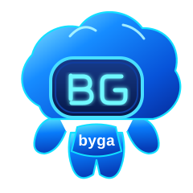

Superset On-Demand
Personal analytics workspaceHubungkan panel
Masukkan dashboard token Worker.
Memuat…
Mulai Superset
Tidak memerlukan email. Login Superset menggunakan akun admin dan password yang tersedia pada ringkasan workflow GitHub Actions.